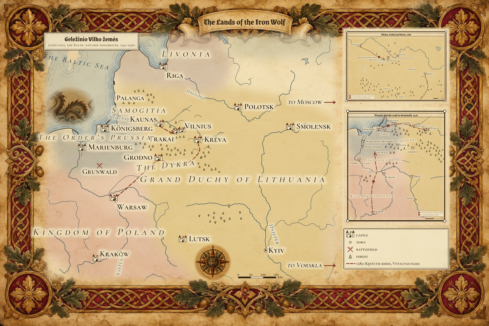
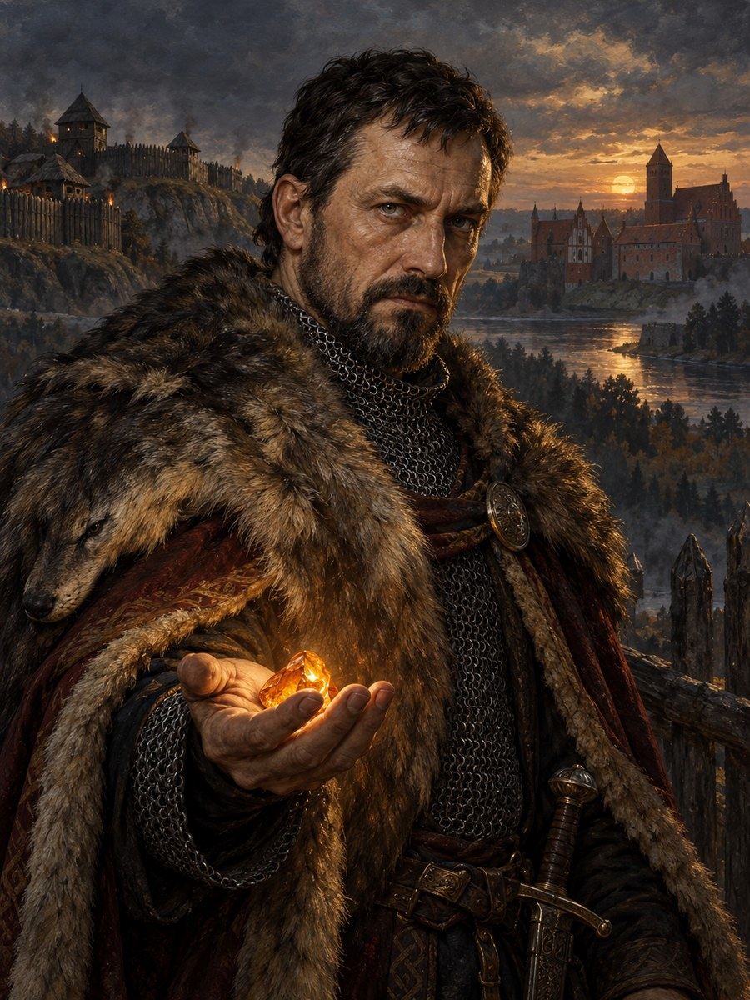
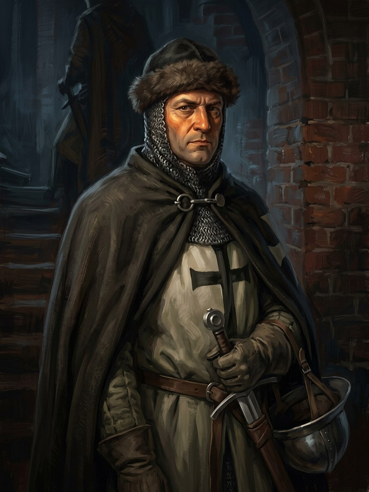
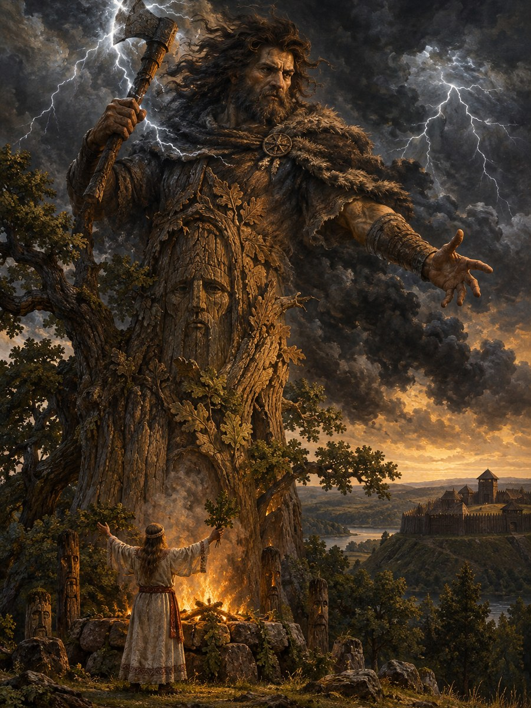
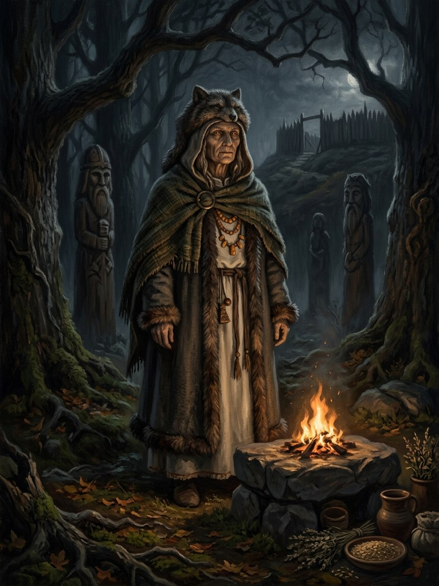
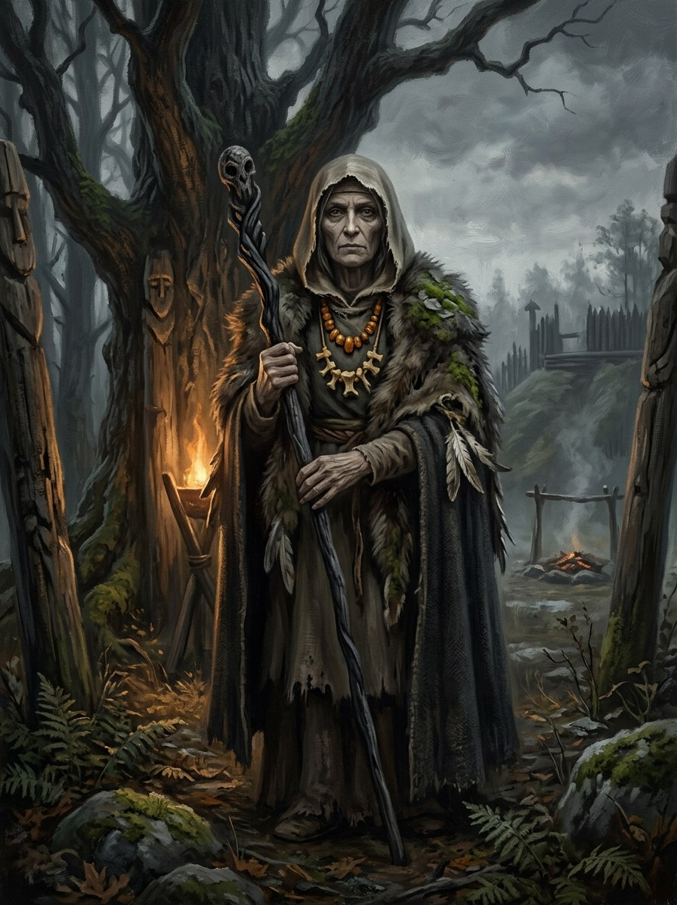
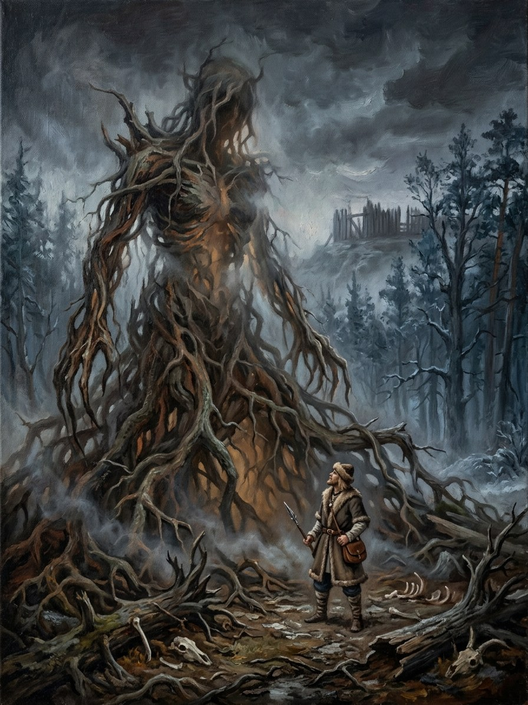
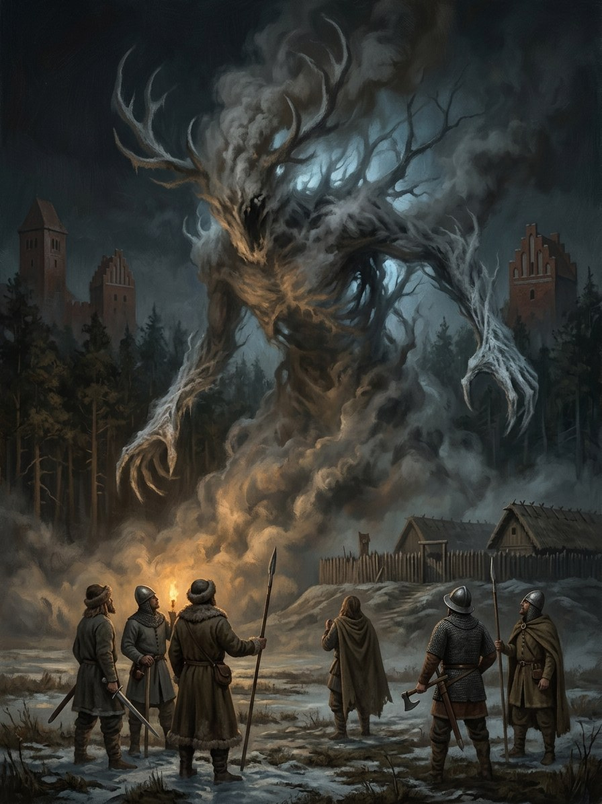
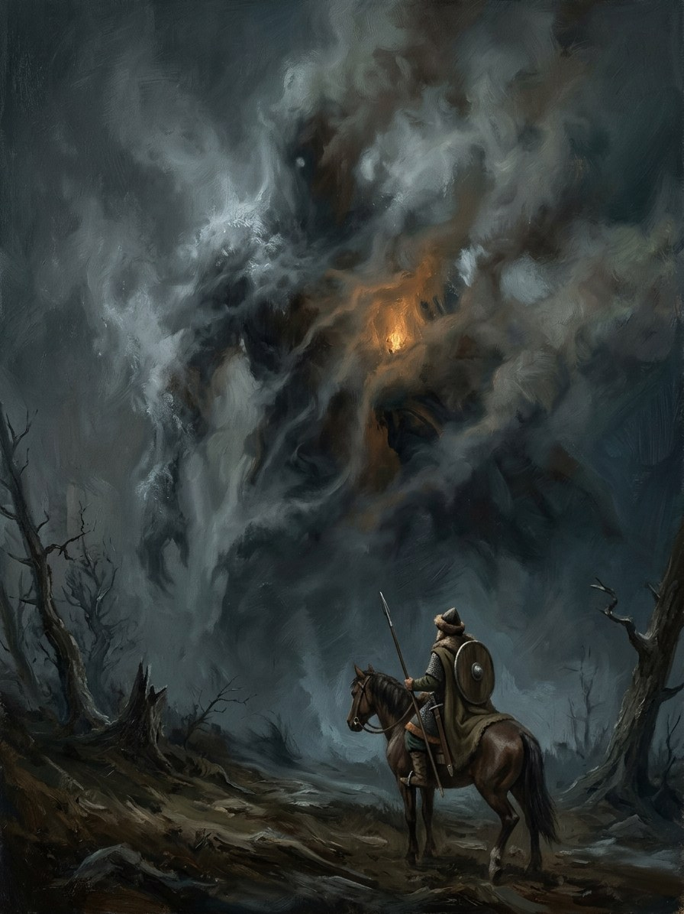
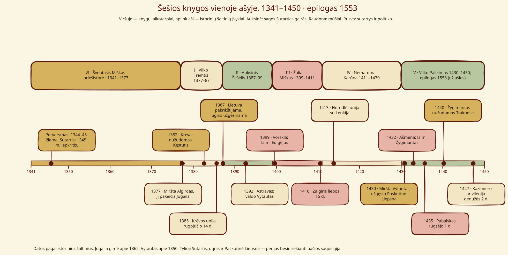

Geležinio Vilko Saga · Wiki¶
Geležinio Vilko Saga: 1341–1450 m. Lietuvos pasaulio enciklopedija
Geležinio Vilko Sagos enciklopedija: Lietuva, 1341–1450, kur tautosaka yra tikra tiesiogine prasme, o žmonės teisūs tik iš dalies.
Šešios knygos¶
Angliški leidimai pasirodys netrukus. Lietuviškus leidimus nemokamai skaitykite internete.


Žemėlapis¶

Žemėlapis: Lietuva, Ordinas, Livonija ir Lenkija, dvi didesnės iškarpos (Vilnius–Trakai–Krėva 1382 m.; Prūsija ir kelias į Žalgirį 1410 m.) bei visų vietovių lentelė.
Svarbiausi veikėjai¶

VytautasDidysis kunigaikštis · 1350–1430 JogailaLenkijos karalius · 1362–1434
BirutėVaidilutė · Gintaro Karalienė
JogailaLenkijos karalius · 1362–1434
BirutėVaidilutė · Gintaro Karalienė
 KęstutisTrakų kunigaikštis · 1297–1382
KęstutisTrakų kunigaikštis · 1297–1382

Marquard von SalzbachOrdino komtūras · †1410 PilkojiVilkų Motina · 1365–1449
PilkojiVilkų Motina · 1365–1449
 Žiežirba (Liepsnos saugotojas)Paskutinės Liepsnos saugotojas
Žiežirba (Liepsnos saugotojas)Paskutinės Liepsnos saugotojas
 Didžioji kunigaikštienė OnaValstybės laidas · †1418
Didžioji kunigaikštienė OnaValstybės laidas · †1418
Dievai ir antgamtinės galios¶

PerkūnasGriaustinio ir ąžuolo dievas
LaimaLikimo ir gimimo deivė
GiltinėMirties deivė
Šaknų MotinaDykros Šaknų Motina
Šešėlių Pardavėjas / HenėNeištartų sandėrių tarpininkas Gintaro KaralienėJūros atmintis
Gintaro KaralienėJūros atmintis

Geležinis ŠventasisŠaltoji Ordino valia Baltoji TylaŠaltis ir žiemos sąstingis
Baltoji TylaŠaltis ir žiemos sąstingis
Šventos relikvijos ir žinija¶


Tautosakos legendos ir lūžiai¶


Visa serija vienoje ašyje¶


Šešios knygos vienoje 1341–1450 laiko juostoje¶
Daugiau diagramų puslapyje Žemėlapiai ir diagramos.
Pažinkite pasaulį¶
Istorija ir Saga: istoriniai liudijimai, ginčijamos tradicijos, sąmoninga išmonė ir neišspręsti neatitikimai (atskleidžiami visos serijos siužetai)
Chronologija: visi įvykiai — istoriniai duomenys (✦) ir sagos išmonė (◇)
Dievai · Galios · Magija ir sutartys · Artefaktai · Būtybės
Pasaulio žinynas: žinynai (kosmologija, magijos taisyklės, chronologija, bestiariumas, legendos, tarimas…)